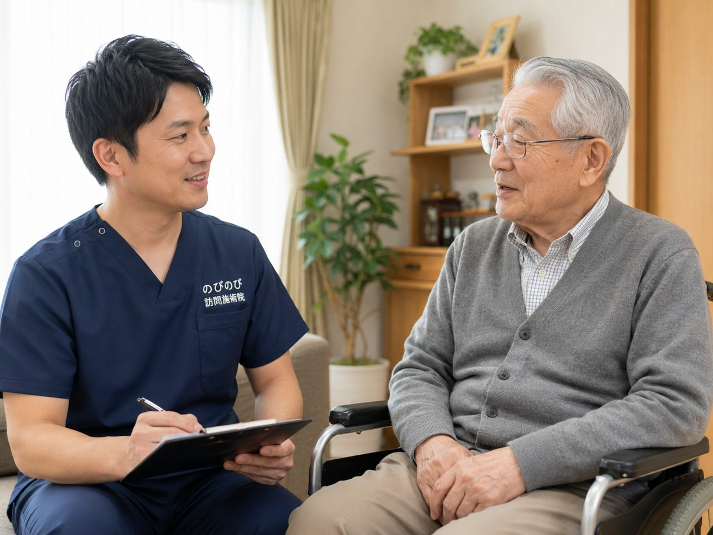

保険で訪問鍼灸マッサージを受けるには、かかりつけ医の同意書が必要です。ところが、いざお願いすると「書けない」「うちでは難しい」と返されることがあります。これは決して珍しいことではなく、あちこちのご家庭で起きています。断られる背景の多くは、制度への不慣れや、その日の診察でのちょっとした受け取り方のずれです。伝え方や相談先を変えれば、道が開けることはめずらしくありません。断られたときにできる具体的な手立てを順にお伝えします。
この記事のポイント
同意書を断られる理由は、鍼灸への不慣れ、忙しい診察、様式が分からない、変形徒手矯正術との混同、「まだ通える」という見立てなど、いくつかに分かれます。対処としては、通院の大変さを具体的な場面として伝え直す、鍼灸に理解のある別の医師に相談する、といった手があります。依頼書の準備や医療機関とのやりとりの段取りは、のびのびがお手伝いします。費用は認められれば1回の総額3,950円、自己負担は1割でおよそ395円。別途の出張費はかからず、エリア内はどこでも同額です。一度断られても、あきらめる前にご相談ください。
断られても、それで終わりではありません
思いきってお願いした同意書を、先生にやんわり断られてしまう。訪問鍼灸マッサージの入り口で、ここにつまずく方は思いのほか多いものです。がっかりされる気持ちはよく分かります。ただ、医師に同意書を断られること自体は、実のところ珍しくありません。断られたからといって、頼み方がまずかったという話ではありません。まず必要なのは、なぜ書いてもらえなかったのかを、落ち着いて見分けることです。理由が分かれば、たいていは次の一手が見えてきます。
なぜ書いてもらえなかったのか、3つに分けて考える
断られる背景は、大きく分けると見当がつきます。ひとつは、方針としてこの種の同意書は書かない、と決めておられる先生の場合。数は多くありませんが、こればかりは先生の考え方ですので、強くお願いを重ねても話は進みません。もうひとつ多いのが、鍼灸マッサージの療養費という制度そのものにあまりなじみがなく、慎重になっておられるケースです。よく知らないものに判を押すのをためらう、というのはむしろ自然な反応でしょう。そして三つ目に、今の症状ではまだ必要性を認めにくい、と医学的に判断された場合。この見分けがつくだけで、次にどう動けばいいかがずいぶん整理されます。
制度と療養費のしくみを、正しく伝える
二つ目の「制度になじみがない」ために慎重になっている先生には、正確な情報をお届けするのがいちばんの近道です。訪問鍼灸マッサージは、医療保険の療養費というしくみで受けるもので、要介護認定は必要ありません。介護保険の限度額とも別の枠なので、デイサービスなどと併用しても限度額を圧迫しません。こうした点は、口頭だけではなかなか伝わりきらないものです。そこでのびのびでは、施術の内容と療養費の流れをまとめた資料を用意し、受診の際にお渡ししています。ご家族がひとりで説明に立たなくても済むよう、お持ちいただく書類ごとこちらで整えます。同意書そのものの取り方や有効期間については、「医師の同意書とは？取得の流れと注意点」にくわしくまとめました。
リハビリと重なる、と言われたとき
「訪問リハビリを受けているので」と断られることもあります。ここは少していねいな説明が要ります。医療保険で行うリハビリと鍼灸は、同じ部位については同時に算定できない決まりがあるためです。ただ、これは併用が一切できないという意味ではなく、部位や組み合わせを整理すれば受けられることがたびたびあります。当院で行う機能訓練は鍼灸に加えて行うもので、それだけを単独で行うわけではありません。保険の対象になるのは神経痛・リウマチ・頸肩腕症候群・五十肩・腰痛症・頸椎捻挫後遺症といった慢性的な症状です。こうした線引きを先生にお伝えすると、納得して書いていただけることもあります。神経痛でお悩みの方は、「神経痛は保険で受けられる？」もあわせてご覧ください。
ひとつの医院に、こだわりすぎない
同意書は、必ずしも最初に相談した先生に書いていただかなければならないものではありません。かかりつけが複数あるなら、整形外科など、体の状態をよく診てくださっている別の科に相談してみる。それも難しければ、セカンドオピニオンのような形で、別の医療機関にあたってみる。同じ症状でも、先生によって判断が違うのはよくあることです。一軒で断られたからと肩を落とさず、相談先を少し広げてみてください。どの科に持ちかけるのが自然か迷うときは、状況を伺って一緒に考えます。
医師の判断は尊重する
大前提として、同意書を書くかどうかは医師が下す判断です。何度も強く迫るのは、正直なところ逆効果になりがちで、その後の通院にも角が立ちかねません。断られたことを「おかしい」と受け取る必要はなく、今の症状ではまだ必要性が認めにくい、という誠実な判断であることも多いのです。鍼灸マッサージは病気そのものを治すものではありませんし、効き方には個人差もあります。そのうえで、症状がつらいのに手立てがない、という状態を放っておかないことが大切だと考えています。時期を置いて改めてお願いする、というのも立派な選択肢です。
それでも難しいときと、費用のこと
手を尽くしても同意が得られないこともあります。その場合は、保険を使わず自費で受けるという道もありますので、そこも含めてご説明します。参考までに保険で受けられたときの負担は、1回の総額が3,950円で、1割の方ならおよそ395円です。週2回のペースでも、1割の方で月におよそ3,160円。出張にかかる費用は別途いただきません。金額の見通しが立つと、次にどうするかを考えやすくなります。同意書のことで足踏みしているうちに、ご本人のつらさがそのままになってしまうのはもったいないことです。段取りは間に入って進めますので、ひとりで抱え込まず、まずは今の状況を聞かせてください。
よくある質問
同意書を書いてもらえないとき、どうすればいいですか？
そこで終わりとは限りません。症状と通院の大変さを具体的な場面として伝え直したり、鍼灸に理解のある別の医師に相談したりすることで、受けられるようになることがあります。依頼書の準備ややりとりの段取りは、のびのびが引き受けますので、ご家族だけで抱え込まないでください。
かかりつけ医に断られたら、別の病院に頼んでもいいですか？
頼めます。整形外科やリウマチ科、神経内科など、鍼灸の対象症状を診ている科の先生のほうが理解のある傾向があります。ただし、まずは今の先生に事情をていねいに伝え、それでも難しいときに他をあたる、という順序がおすすめです。強く迫らず進めましょう。
同意書のお願いは、自分でしないといけませんか？
依頼書や様式の準備、医療機関への受け渡しといった段取りは、のびのびが引き受けます。ご家族が一から病院にお願いに行かれる場面は、ほとんどありません。「どの先生に何を頼めばいいか」という段階からご相談いただけます。
同意書には期限がありますか？
はい、有効期限があります。期限が近づいたら、あらためて再同意をお願いすることになります。切らすとその間の施術が保険で受けられなくなりますが、更新時期のお知らせや段取りはのびのびが受け持ちますので、日付の管理をご家族が抱える必要はありません。
変形徒手矯正術の同意書とは何ですか？
関節の拘縮や麻痺に対して、動く範囲を保つために行うマッサージの区分で、はり・きゅうの同意書とは様式や期限の扱いが異なります。脳梗塞後の麻痺や関節が固まった状態で関わることがあります。どの同意書が必要になりそうかは状態次第なので、まずはご相談ください。
同意書のことで、費用はかかりますか？
同意書を書いてもらう際に、先生によっては文書料がかかる場合があります。施術そのものは保険が使え、認められれば1回の総額3,950円のうち1割でおよそ395円が目安です。別途の出張費はかからず、エリア内は同額です。お支払いは月ごとにまとめていただき、明細をお渡しします。
かかりつけ医がいない場合はどうすればいいですか？
その場合の始め方も含めてご相談ください。症状に応じて、どの科の医師に相談するとよいかをご案内します。状況を伺いながら、無理のない進め方を一緒に整理します。
同意書のことだけ、相談してもいいですか？
はい。まずは状況をお聞かせください。断られた理由やこれまでの経過を伺えば、分かる範囲で次の道すじをお伝えします。相談だけでも構いませんので、話を閉じてしまう前に一度声をかけてください。
この記事の根拠
はり・きゅう、あん摩マッサージ指圧の療養費は、厚生労働省が定めた取扱いにもとづく制度です。制度そのものをご自身で確かめたいときは、厚生労働省の療養費について（新しいタブで開きます）をご覧ください。「被保険者のみなさまへ」の案内も、同じページからたどれます。
同意書の書式は、厚生労働省がはり、きゅう及びあん摩マッサージ指圧の同意書の取扱い（新しいタブで開きます）で公開しているものと同じです。